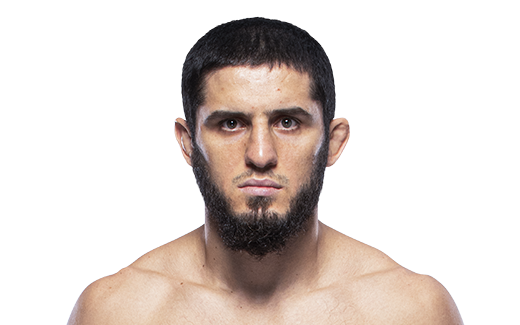

Islam Makhachev es un peleador profesional de artes marciales mixtas originario de Daguestán, Rusia. Nació el 27 de octubre de 1991 en la ciudad de Makhachkala. Desde muy joven comenzó a entrenar deportes de combate, especialmente lucha y sambo, disciplinas muy populares en su región. Su talento y disciplina lo llevaron a convertirse en uno de los luchadores más dominantes dentro del MMA moderno.

Islam Makhachev creció entrenando bajo la influencia de uno de los entrenadores más respetados del mundo, Abdulmanap Nurmagomedov, quien también fue mentor del legendario campeón Khabib Nurmagomedov. Gracias a esta formación desarrolló un estilo de combate extremadamente completo, basado en control del oponente, lucha dominante y un grappling muy técnico.
Después de una exitosa carrera en el sambo de combate, donde llegó a ganar campeonatos mundiales, decidió dar el salto a las artes marciales mixtas profesionales. En poco tiempo llamó la atención de la UFC, la organización más importante del mundo en MMA.
Dentro de la UFC Makhachev demostró rápidamente su dominio en la lucha y el control en el suelo. Su estilo se caracteriza por presionar a sus oponentes, derribarlos y mantener un control total hasta encontrar una sumisión o ganar la pelea por decisión dominante.
Con el paso del tiempo se convirtió en campeón de peso ligero de la UFC, consolidándose como uno de los mejores peleadores libra por libra del mundo. Sus victorias contra peleadores de élite demostraron su capacidad técnica, su inteligencia estratégica y su enorme disciplina.
En su carrera dentro de MMA ha competido principalmente en:
Makhachev es famoso por:
Gracias a su estilo dominante, su técnica refinada y su mentalidad competitiva, Islam Makhachev se ha consolidado como uno de los campeones más completos y peligrosos en la historia moderna de la UFC.
Otros que podrían interesarte: